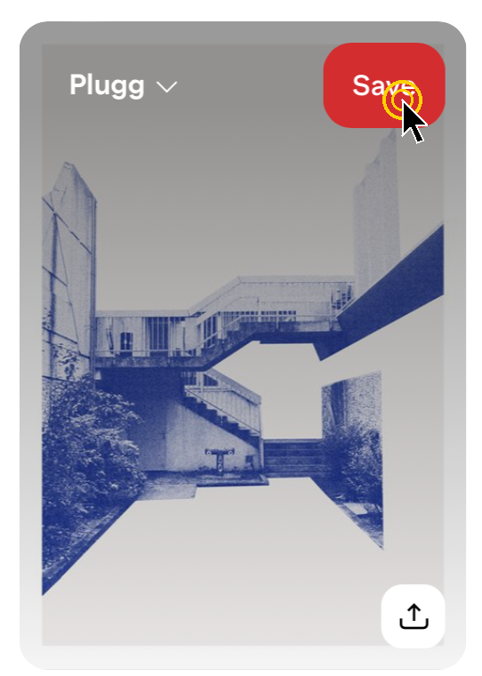
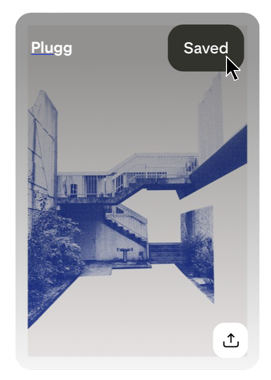
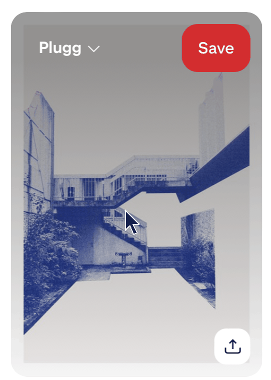

URL
Object: Save Button
How to find it: log in to Pinterest, stay on the Home feed, and move the mouse over any pin. The red "Save" button appears in the top-right corner of the pin.
TRIGGERS:
- Pin
- Hover ON
- Hover OFF
- Save Button
- Hover ON
- Hover OFF
- Click ON
RULES:
- Pin:
- Hover ON
- Dark gray overlay appears over the pin image
- Board name "Plugg" with a down arrow appears top left
- Red "Save" button appears top right
- Share icon appears bottom right
- White rounded square, black arrow
- Hover OFF
- Overlay disappears
- Board name, Save button and share icon disappear
- Hover ON
- Save Button:
- Hover ON
- Cursor changes to Finger
- Button turns a slightly darker red
- Hover OFF
- Cursor changes back to default
- Button goes back to normal red
- Click ON
- Pin is saved to the board shown on the left ("Plugg")
- Database updated with the pin added to that board
- Button background changes from RED to BLACK
- Button text "Save" changes to "Saved"
- Down arrow next to the board name disappears
- Board name "Plugg" becomes an underlined link to the board
- "Plugg" stays the default board for the next save
- Hover ON
FEEDBACK:
- Pin:
- Hover ON
- Dark gray overlay appears over the pin image
- Board name "Plugg" with a down arrow appears top left
- Red "Save" button appears top right
- Share icon appears bottom right
- Hover OFF
- Overlay disappears
- Board name, Save button and share icon disappear
- Hover ON
- Save Button:
- Hover ON
- Cursor changes to Finger
- Button turns a slightly darker red
- Hover OFF
- Cursor changes back to default
- Button goes back to normal red
- Click ON
- Button background changes from RED to BLACK
- Button text "Save" changes to "Saved"
- Down arrow next to the board name disappears
- Board name "Plugg" becomes an underlined link
- Sound: none
- Feel: none
- Hover ON
LOOPS/MODE:
- Loops:
- Every pin in the feed has its own Save button
- Feed scrolls forever, so the microinteraction repeats on every new pin
- Saved pin still shows "Saved" when hovered again
- Last board used becomes the default board on the next pin
- Modes:
- Board picker: clicking the board name opens a list of boards to save to instead
- Logged out: clicking Save asks the user to log in or sign up
- Touch (phone/tablet): no hover, so Save shows after tapping into the pin
VISUALS:
Black arrow = cursor position. Yellow rings = click.
|
|
 |
 |
|
 |